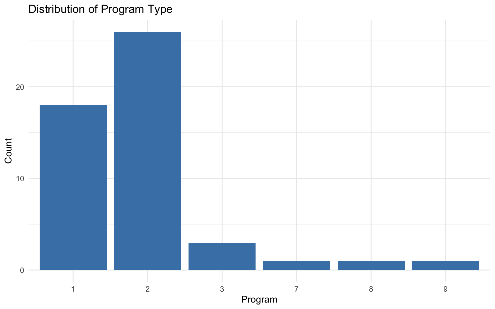
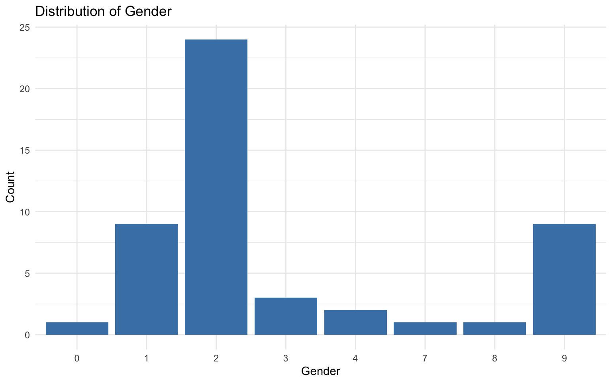
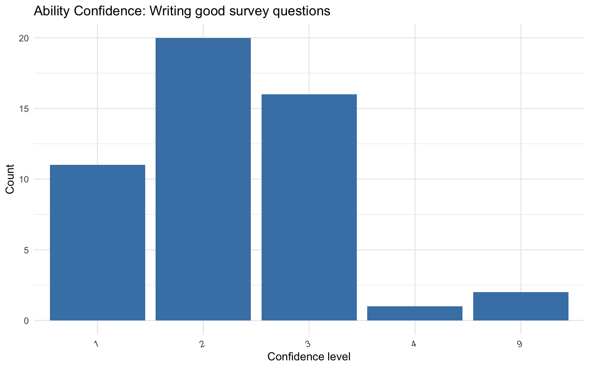

# Run this ONCE to install packages
# #install.packages(c("tidyverse", "janitor", "skimr",
# "psych", "naniar", "readxl", "diffdf"))
library(tidyverse) # Data manipulation and visualization
library(janitor) # Clean variable names and tabulations
library(skimr) # Quick summary statistics
library(naniar) # Missing data visualization and analysis
library(readxl) # Read Excel files
library(diffdf) # Compare two data framesPost-Survey Data Preparation
Data Entry
Suppose you conducted a paper survey and now have a stack of completed questionnaires. The next step is to enter the data into a digital format for analysis. This process is called data entry.
Data entry can be done using software like Excel, SPSS, or directly into R. For this course, we will use Excel for data entry and then import the data into R for cleaning and analysis.
You can use the provided data entry template to enter your survey responses. Each row represents one respondent, and each column corresponds to a survey item. Follow the instructions in the template for coding responses (e.g., using numeric codes for categorical variables).
you can use validation rules in Excel to restrict data entry to valid codes (e.g., only allowing 1, 2, 3 for a variable with three categories). This can help reduce data entry errors.
Codebooks
A codebook is a document that describes every variable in your dataset. It typically includes variable names and labels, value codes and their meanings, missing data codes, and any special instructions for using the data. Always keep a codebook alongside your data file.
Our codebook documents the following types of variables:
| Variable type | Variables | Values |
|---|---|---|
| Single choice | program, Gender, NativeSpeaker, FutureUse |
Numeric codes (see codebook) |
| Checkbox (binary) | StatisticalMethods_*, Software_*, Experience_* |
0 = not selected, 1 = selected |
| Ordinal confidence | Ability_Confidence1–7, Learning_Confidence1–7 |
1–4 scale |
Missing data codes: values 7, 8, and 9 indicate “multiple options selected”, “other responses”, and “no response” respectively. These will be treated as missing (NA).
In the analysis below, we will need the following R pacakges. Install these packages first if you haven’t already. You only need to install once.
Load the packages at the start of every session:
Import Your Data
R can read Excel files using the readxl package. The EPSY 5244 survey data file has two sheets.
data_url <- "https://raw.githubusercontent.com/Wenchao-Ma/Data/main/Course_survey/course_survey.xlsx"
data_file <- tempfile(fileext = ".xlsx")
download.file(data_url, destfile = data_file, mode = "wb", quiet = TRUE)
df <- readxl::read_excel(data_file, sheet = "data")R can also read csv, SPSS (.sav), Stata (.dta), and SAS (.sas7bdat) files using various packages (e.g., readr, haven). The choice of format depends on your software preferences and the complexity of your data (e.g., whether you need to preserve value labels). Excel is a common choice for data entry because it is widely available and user-friendly, but be mindful of potential issues with Excel files (e.g., formatting inconsistencies, missing value codes).
Comparing Two Data Entry Sheets
This file has two sheets — data and second_entry — representing data entered by two different people. Before proceeding, check whether the two entries agree.
# Read both sheets
df <- readxl::read_excel(data_file, sheet = "data")
df2 <- readxl::read_excel(data_file, sheet = "second_entry")Use diffdf::diffdf() to find what differs, if any:
# Reports variables, rows, and cells that differ
diffdf::diffdf(df, df2)Differences found between the objects!
Summary of BASE and COMPARE
==================================================================
PROPERTY BASE COMP
------------------------------------------------------------------
Name df df2
Class "tbl_df, tbl, data.frame" "tbl_df, tbl, data.frame"
Rows(#) 50 50
Columns(#) 39 39
------------------------------------------------------------------
Not all Values Compared Equal
First 10 of 20 rows are shown in table below
==================================================
Variable No of Differences
--------------------------------------------------
StatisticalMethods_introstats 1
StatisticalMethods_ANOVA 2
StatisticalMethods_Chisq 2
StatisticalMethods_Psych 1
StatisticalMethods_Qual 1
StatisticalMethods_Sampling 1
StatisticalMethods_ML 1
StatisticalMethods_NOA 1
Software_SPSS 1
Software_Nvivo 1
--------------------------------------------------
=============================================================
VARIABLE ..ROWNUMBER.. BASE COMPARE
-------------------------------------------------------------
StatisticalMethods_introstats 21 9 0
-------------------------------------------------------------
========================================================
VARIABLE ..ROWNUMBER.. BASE COMPARE
--------------------------------------------------------
StatisticalMethods_ANOVA 21 9 0
StatisticalMethods_ANOVA 23 11 1
--------------------------------------------------------
========================================================
VARIABLE ..ROWNUMBER.. BASE COMPARE
--------------------------------------------------------
StatisticalMethods_Chisq 21 9 0
StatisticalMethods_Chisq 33 0 1
--------------------------------------------------------
========================================================
VARIABLE ..ROWNUMBER.. BASE COMPARE
--------------------------------------------------------
StatisticalMethods_Psych 21 9 0
--------------------------------------------------------
=======================================================
VARIABLE ..ROWNUMBER.. BASE COMPARE
-------------------------------------------------------
StatisticalMethods_Qual 21 9 0
-------------------------------------------------------
===========================================================
VARIABLE ..ROWNUMBER.. BASE COMPARE
-----------------------------------------------------------
StatisticalMethods_Sampling 21 9 0
-----------------------------------------------------------
=====================================================
VARIABLE ..ROWNUMBER.. BASE COMPARE
-----------------------------------------------------
StatisticalMethods_ML 21 9 0
-----------------------------------------------------
======================================================
VARIABLE ..ROWNUMBER.. BASE COMPARE
------------------------------------------------------
StatisticalMethods_NOA 21 9 0
------------------------------------------------------
=============================================
VARIABLE ..ROWNUMBER.. BASE COMPARE
---------------------------------------------
Software_SPSS 21 9 0
---------------------------------------------
==============================================
VARIABLE ..ROWNUMBER.. BASE COMPARE
----------------------------------------------
Software_Nvivo 21 9 0
----------------------------------------------
===============================================
VARIABLE ..ROWNUMBER.. BASE COMPARE
-----------------------------------------------
Software_Jomovi 21 9 0
-----------------------------------------------
==========================================
VARIABLE ..ROWNUMBER.. BASE COMPARE
------------------------------------------
Software_R 21 9 0
------------------------------------------
===============================================
VARIABLE ..ROWNUMBER.. BASE COMPARE
-----------------------------------------------
Software_Python 21 9 0
-----------------------------------------------
==================================================
VARIABLE ..ROWNUMBER.. BASE COMPARE
--------------------------------------------------
Software_Qualtrics 21 9 0
--------------------------------------------------
============================================
VARIABLE ..ROWNUMBER.. BASE COMPARE
--------------------------------------------
Software_NOA 21 9 0
--------------------------------------------
===============================================
VARIABLE ..ROWNUMBER.. BASE COMPARE
-----------------------------------------------
Experience_help 21 9 0
-----------------------------------------------
=================================================
VARIABLE ..ROWNUMBER.. BASE COMPARE
-------------------------------------------------
Experience_design 21 9 0
-------------------------------------------------
==================================================
VARIABLE ..ROWNUMBER.. BASE COMPARE
--------------------------------------------------
Experience_collect 21 9 0
--------------------------------------------------
==================================================
VARIABLE ..ROWNUMBER.. BASE COMPARE
--------------------------------------------------
Experience_analyze 21 9 0
--------------------------------------------------
==================================================
VARIABLE ..ROWNUMBER.. BASE COMPARE
--------------------------------------------------
Experience_publish 21 9 0
--------------------------------------------------diffdf::diffdf() reports:
- Variables present in one sheet but not the other
- Rows present in one sheet but not the other
- Cell-level differences: values that differ between corresponding rows and columns
If no differences are found, the function returns silently (no output). Investigate any differences and resolve them before proceeding.
Look at Your Data!
Before doing any formal cleaning, always look at your data first. Get familiar with the variables, their types, and their values. Take notes on anything that looks unusual.
Quick Overview with skim()
The skim() function from the skimr package provides a comprehensive overview in one command:
skimr::skim(df)| Name | df |
| Number of rows | 50 |
| Number of columns | 39 |
| _______________________ | |
| Column type frequency: | |
| character | 1 |
| numeric | 38 |
| ________________________ | |
| Group variables | None |
Variable type: character
| skim_variable | n_missing | complete_rate | min | max | empty | n_unique | whitespace |
|---|---|---|---|---|---|---|---|
| ID | 0 | 1 | 2 | 3 | 0 | 50 | 0 |
Variable type: numeric
| skim_variable | n_missing | complete_rate | mean | sd | p0 | p25 | p50 | p75 | p100 | hist |
|---|---|---|---|---|---|---|---|---|---|---|
| program | 0 | 1.00 | 2.06 | 1.63 | 1 | 1.00 | 2.0 | 2.00 | 9 | ▇▁▁▁▁ |
| StatisticalMethods_introstats | 0 | 1.00 | 1.24 | 1.85 | 0 | 1.00 | 1.0 | 1.00 | 11 | ▇▁▁▁▁ |
| StatisticalMethods_ANOVA | 0 | 1.00 | 1.12 | 1.89 | 0 | 1.00 | 1.0 | 1.00 | 11 | ▇▁▁▁▁ |
| StatisticalMethods_Chisq | 0 | 1.00 | 0.68 | 1.32 | 0 | 0.00 | 0.5 | 1.00 | 9 | ▇▁▁▁▁ |
| StatisticalMethods_Psych | 0 | 1.00 | 0.62 | 1.31 | 0 | 0.00 | 0.0 | 1.00 | 9 | ▇▁▁▁▁ |
| StatisticalMethods_Qual | 0 | 1.00 | 0.70 | 1.30 | 0 | 0.00 | 1.0 | 1.00 | 9 | ▇▁▁▁▁ |
| StatisticalMethods_Sampling | 0 | 1.00 | 0.48 | 1.31 | 0 | 0.00 | 0.0 | 1.00 | 9 | ▇▁▁▁▁ |
| StatisticalMethods_ML | 0 | 1.00 | 0.36 | 1.31 | 0 | 0.00 | 0.0 | 0.00 | 9 | ▇▁▁▁▁ |
| StatisticalMethods_NOA | 1 | 0.98 | 0.29 | 1.31 | 0 | 0.00 | 0.0 | 0.00 | 9 | ▇▁▁▁▁ |
| Software_SPSS | 0 | 1.00 | 0.62 | 1.31 | 0 | 0.00 | 0.0 | 1.00 | 9 | ▇▁▁▁▁ |
| Software_Nvivo | 0 | 1.00 | 0.38 | 1.32 | 0 | 0.00 | 0.0 | 0.00 | 9 | ▇▁▁▁▁ |
| Software_Jomovi | 0 | 1.00 | 0.12 | 1.85 | -9 | 0.00 | 0.0 | 0.00 | 9 | ▁▁▇▁▁ |
| Software_R | 0 | 1.00 | 0.96 | 1.23 | 0 | 1.00 | 1.0 | 1.00 | 9 | ▇▁▁▁▁ |
| Software_Python | 0 | 1.00 | 0.48 | 1.31 | 0 | 0.00 | 0.0 | 1.00 | 9 | ▇▁▁▁▁ |
| Software_Qualtrics | 0 | 1.00 | 0.54 | 1.31 | 0 | 0.00 | 0.0 | 1.00 | 9 | ▇▁▁▁▁ |
| Software_NOA | 0 | 1.00 | 0.34 | 1.45 | 0 | 0.00 | 0.0 | 0.00 | 9 | ▇▁▁▁▁ |
| Experience_help | 0 | 1.00 | 0.74 | 1.29 | 0 | 0.00 | 1.0 | 1.00 | 9 | ▇▁▁▁▁ |
| Experience_design | 0 | 1.00 | 0.60 | 1.31 | 0 | 0.00 | 0.0 | 1.00 | 9 | ▇▁▁▁▁ |
| Experience_collect | 0 | 1.00 | 0.80 | 1.29 | 0 | 0.00 | 1.0 | 1.00 | 9 | ▇▁▁▁▁ |
| Experience_analyze | 0 | 1.00 | 0.82 | 1.76 | 0 | 0.00 | 0.5 | 1.00 | 9 | ▇▁▁▁▁ |
| Experience_publish | 0 | 1.00 | 0.38 | 1.32 | -1 | 0.00 | 0.0 | 0.00 | 9 | ▇▁▁▁▁ |
| Ability_Confidence1 | 0 | 1.00 | 2.42 | 1.57 | 1 | 2.00 | 2.0 | 3.00 | 9 | ▇▅▁▁▁ |
| Ability_Confidence2 | 0 | 1.00 | 2.58 | 1.97 | 0 | 2.00 | 2.0 | 3.00 | 9 | ▃▇▁▁▁ |
| Ability_Confidence3 | 0 | 1.00 | 2.60 | 1.83 | 1 | 2.00 | 2.0 | 3.00 | 9 | ▇▃▁▁▁ |
| Ability_Confidence4 | 0 | 1.00 | 2.26 | 1.84 | 0 | 1.00 | 2.0 | 3.00 | 9 | ▇▇▁▁▁ |
| Ability_Confidence5 | 0 | 1.00 | 2.66 | 2.18 | 1 | 1.00 | 2.0 | 3.00 | 11 | ▇▁▁▁▁ |
| Ability_Confidence6 | 0 | 1.00 | 2.94 | 1.63 | 1 | 2.00 | 2.5 | 3.00 | 9 | ▇▇▁▁▁ |
| Ability_Confidence7 | 0 | 1.00 | 3.04 | 1.93 | 1 | 2.00 | 2.5 | 3.75 | 9 | ▇▇▁▁▁ |
| Learning_Confidence1 | 0 | 1.00 | 3.32 | 1.50 | 1 | 3.00 | 3.0 | 4.00 | 9 | ▂▇▁▁▁ |
| Learning_Confidence2 | 0 | 1.00 | 3.18 | 1.84 | 1 | 2.00 | 3.0 | 3.00 | 9 | ▃▇▁▁▁ |
| Learning_Confidence3 | 0 | 1.00 | 3.28 | 1.55 | 1 | 3.00 | 3.0 | 4.00 | 9 | ▃▇▁▁▁ |
| Learning_Confidence4 | 0 | 1.00 | 3.46 | 1.79 | 1 | 3.00 | 3.0 | 4.00 | 9 | ▂▇▁▁▁ |
| Learning_Confidence5 | 0 | 1.00 | 3.40 | 1.85 | 1 | 2.25 | 3.0 | 4.00 | 9 | ▃▇▁▁▁ |
| Learning_Confidence6 | 0 | 1.00 | 3.56 | 1.51 | 1 | 3.00 | 3.0 | 4.00 | 9 | ▂▇▁▁▁ |
| Learning_Confidence7 | 0 | 1.00 | 3.62 | 1.65 | 1 | 3.00 | 3.0 | 4.00 | 9 | ▂▇▁▁▁ |
| Gender | 0 | 1.00 | 3.40 | 2.96 | 0 | 2.00 | 2.0 | 3.75 | 9 | ▃▇▁▁▃ |
| NativeSpeaker | 0 | 1.00 | 3.40 | 3.22 | 1 | 1.00 | 2.0 | 5.75 | 9 | ▇▁▁▁▂ |
| FutureUse | 0 | 1.00 | 2.14 | 1.28 | 0 | 2.00 | 2.0 | 2.00 | 9 | ▁▇▁▁▁ |
This shows the number of rows and columns, data types, missing values, and basic summary statistics for every variable—a great first step.
Clean Variable Names (optional)
Variable names from Qualtrics often contain mixed capitalization and special characters. The clean_names() function standardizes them to lowercase with underscores:
# Before cleaning
names(df) [1] "ID" "program"
[3] "StatisticalMethods_introstats" "StatisticalMethods_ANOVA"
[5] "StatisticalMethods_Chisq" "StatisticalMethods_Psych"
[7] "StatisticalMethods_Qual" "StatisticalMethods_Sampling"
[9] "StatisticalMethods_ML" "StatisticalMethods_NOA"
[11] "Software_SPSS" "Software_Nvivo"
[13] "Software_Jomovi" "Software_R"
[15] "Software_Python" "Software_Qualtrics"
[17] "Software_NOA" "Experience_help"
[19] "Experience_design" "Experience_collect"
[21] "Experience_analyze" "Experience_publish"
[23] "Ability_Confidence1" "Ability_Confidence2"
[25] "Ability_Confidence3" "Ability_Confidence4"
[27] "Ability_Confidence5" "Ability_Confidence6"
[29] "Ability_Confidence7" "Learning_Confidence1"
[31] "Learning_Confidence2" "Learning_Confidence3"
[33] "Learning_Confidence4" "Learning_Confidence5"
[35] "Learning_Confidence6" "Learning_Confidence7"
[37] "Gender" "NativeSpeaker"
[39] "FutureUse" # Clean all names: lowercase, underscores instead of spaces/special characters
df <- df %>%
janitor::clean_names()
# After cleaning
names(df) [1] "id" "program"
[3] "statistical_methods_introstats" "statistical_methods_anova"
[5] "statistical_methods_chisq" "statistical_methods_psych"
[7] "statistical_methods_qual" "statistical_methods_sampling"
[9] "statistical_methods_ml" "statistical_methods_noa"
[11] "software_spss" "software_nvivo"
[13] "software_jomovi" "software_r"
[15] "software_python" "software_qualtrics"
[17] "software_noa" "experience_help"
[19] "experience_design" "experience_collect"
[21] "experience_analyze" "experience_publish"
[23] "ability_confidence1" "ability_confidence2"
[25] "ability_confidence3" "ability_confidence4"
[27] "ability_confidence5" "ability_confidence6"
[29] "ability_confidence7" "learning_confidence1"
[31] "learning_confidence2" "learning_confidence3"
[33] "learning_confidence4" "learning_confidence5"
[35] "learning_confidence6" "learning_confidence7"
[37] "gender" "native_speaker"
[39] "future_use" # e.g., "StatisticalMethods_ANOVA" becomes "statisticalmethods_anova"
# "Gender" becomes "gender"Diagnostic Data Cleaning
Diagnostic cleaning detects substantive problems in the data—values that are impossible, implausible, or inconsistent.
Check Unique Identifiers
Every dataset should have a variable that uniquely identifies each observation. In this dataset, id serves that role (values like “A1”, “A2”, etc.).
If an ID appears more than once, it may indicate duplicate entries or a data entry error.
# How many rows vs. how many unique IDs?
nrow(df)[1] 50dplyr::n_distinct(df$id)[1] 50# Find IDs that appear more than once
df %>%
dplyr::count(id) %>%
dplyr::filter(n > 1)If you find duplicates, investigate: Are they true duplicates (same row entered twice)? Decide whether to remove them based on your study design.
Check for Implausible Values: All Variables
Use a for loop with table() to quickly scan every variable for unexpected values:
for (var in names(df)) {
cat("\n---", var, "---\n")
print(table(df[[var]], useNA = "ifany"))
}
--- id ---
A1 A10 A11 A12 A13 A14 A15 A16 A17 A18 A19 A2 A3 A4 A5 A6 A7 A8 A9 B1
1 1 1 1 1 1 1 1 1 1 1 1 1 1 1 1 1 1 1 1
B10 B11 B12 B13 B14 B15 B16 B17 B18 B19 B2 B20 B21 B22 B23 B24 B25 B26 B27 B28
1 1 1 1 1 1 1 1 1 1 1 1 1 1 1 1 1 1 1 1
B29 B3 B30 B31 B4 B5 B6 B7 B8 B9
1 1 1 1 1 1 1 1 1 1
--- program ---
1 2 3 7 8 9
18 26 3 1 1 1
--- statistical_methods_introstats ---
0 1 9 11
6 42 1 1
--- statistical_methods_anova ---
0 1 9 11
12 36 1 1
--- statistical_methods_chisq ---
0 1 2 9
25 23 1 1
--- statistical_methods_psych ---
0 1 9
27 22 1
--- statistical_methods_qual ---
0 1 9
23 26 1
--- statistical_methods_sampling ---
0 1 9
34 15 1
--- statistical_methods_ml ---
0 1 9
40 9 1
--- statistical_methods_noa ---
0 1 9 <NA>
43 5 1 1
--- software_spss ---
0 1 9
27 22 1
--- software_nvivo ---
0 1 2 9
40 8 1 1
--- software_jomovi ---
-9 0 1 9
1 42 6 1
--- software_r ---
0 1 9
10 39 1
--- software_python ---
0 1 9
34 15 1
--- software_qualtrics ---
0 1 9
31 18 1
--- software_noa ---
0 1 5 9
45 3 1 1
--- experience_help ---
0 1 9
21 28 1
--- experience_design ---
0 1 9
28 21 1
--- experience_collect ---
0 1 2 9
19 29 1 1
--- experience_analyze ---
0 1 9
25 23 2
--- experience_publish ---
-1 0 1 9
1 37 11 1
--- ability_confidence1 ---
1 2 3 4 9
11 20 16 1 2
--- ability_confidence2 ---
0 1 2 3 4 7 9
1 10 23 9 3 1 3
--- ability_confidence3 ---
1 2 3 4 6 8 9
10 23 10 3 1 1 2
--- ability_confidence4 ---
0 1 2 3 4 7 9
1 20 13 10 3 1 2
--- ability_confidence5 ---
1 2 3 4 8 9 11
15 15 13 3 1 2 1
--- ability_confidence6 ---
1 2 3 4 7 9
3 22 13 9 1 2
--- ability_confidence7 ---
1 2 3 4 8 9
5 20 12 9 1 3
--- learning_confidence1 ---
1 2 3 4 7 9
3 5 28 11 1 2
--- learning_confidence2 ---
1 2 3 4 8 9
5 9 27 5 1 3
--- learning_confidence3 ---
1 2 3 4 7 9
3 9 22 13 1 2
--- learning_confidence4 ---
1 2 3 4 8 9
4 5 24 13 1 3
--- learning_confidence5 ---
1 2 3 4 7 9
7 6 15 18 1 3
--- learning_confidence6 ---
1 2 3 4 8 9
1 7 19 20 1 2
--- learning_confidence7 ---
1 2 3 4 7 9
1 7 20 18 1 3
--- gender ---
0 1 2 3 4 7 8 9
1 9 24 3 2 1 1 9
--- native_speaker ---
1 2 7 9
17 20 2 11
--- future_use ---
0 1 2 7 9
1 3 44 1 1 What to look for:
- For single-choice variables (
program,gender, etc.): after factor conversion, anyNAvalues came from out-of-range codes (7/8/9). Check whether the number ofNAs is reasonable. - For checkbox binary variables (
statisticalmethods_*,software_*,experience_*): only values 0 and 1 are valid. - For confidence items (
ability_confidence*,learning_confidence*): only levels 1–4 are valid; others becomeNA.
Check for Implausible Response Combinations
Some response combinations are logically impossible. The “none of the above” options (statisticalmethods_noa, software_noa) should be mutually exclusive with the other items in the same group.
# If statisticalmethods_noa = 1, all other StatisticalMethods items should be 0
table(df$statistical_methods_noa, df$statistical_methods_introstats,
dnn = c("None of above", "Intro stats")) Intro stats
None of above 0 1 9 11
0 5 38 0 0
1 1 3 0 1
9 0 0 1 0Visualize Data for Quality Checks
Visualizations can reveal patterns that numbers alone might miss.
Bar Charts for Categorical Variables
# Bar chart for program type
ggplot2::ggplot(df, ggplot2::aes(x = as.factor(program))) +
ggplot2::geom_bar(fill = "steelblue") +
ggplot2::labs(x = "Program", y = "Count",
title = "Distribution of Program Type") +
ggplot2::theme_minimal()
# Bar chart for gender
ggplot2::ggplot(df, ggplot2::aes(x = as.factor(gender))) +
ggplot2::geom_bar(fill = "steelblue") +
ggplot2::labs(x = "Gender", y = "Count",
title = "Distribution of Gender") +
ggplot2::theme_minimal()
Bar Charts for Ordinal (Confidence) Variables
Since the confidence items are ordered factors (not continuous numbers), bar charts are appropriate:
# Distribution of Ability_Confidence1: "Writing good survey questions"
ggplot2::ggplot(df, ggplot2::aes(x = as.factor(ability_confidence1))) +
ggplot2::geom_bar(fill = "steelblue") +
ggplot2::labs(x = "Confidence level",
y = "Count",
title = "Ability Confidence: Writing good survey questions") +
ggplot2::theme_minimal() +
ggplot2::theme(axis.text.x = ggplot2::element_text(angle = 20, hjust = 1))
Missing Coding
In this dataset, values 7, 8, and 9 indicate “multiple options selected”, “other responses”, and “no response” respectively. These are not valid responses for analysis and should be treated as missing (NA).
df_nomissing <- df |> naniar::replace_with_na(replace = list(7, 8, 9))Note that this only handle missing code in the codebook; however, variables may have invalid values that are not in the codebook (e.g., 2 for a binary variable). You will need to check for those separately and decide how to handle them (e.g., recode to NA or investigate further).